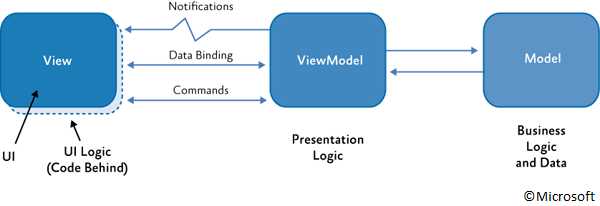

The world of mobile today is dominated by the Android and iOS platforms and it's therefore no surprise that we, as a Microsoft development shop, would be interested in any product that promises to offer a 'write once, run everywhere' solution which can build native applications for both of these platforms (and indeed Windows Phone), virtually from one single .NET code base.
All code referred to in this blog post is available on GitHub: https://github.com/Creou/ConferenceApp
The Xamarin Platform allows developers to target all three major mobile platforms using C#, with Xamarin.Android and Xamarin.iOS exposing each platforms' respective native libraries and classes to .NET so the developer needs no knowledge at all of either Java or Objective C to be able to write Android and iOS apps. Following SOLID principles and ensuring the presentation layer is kept separate from any business logic it's possible to produce a code base which is largely shared between all three platforms, with just an OS-specific presentation layer written separately for each platform. This in theory can dramatically reduce the time it would take to develop applications across multiple platforms. It also opens up the Android and iOS markets to developers that don't have prior experience of developing native apps for these platforms. The more recently released 'Xamarin.Forms' takes this one step further by extending the 'write once, run everywhere' model to the front-end by essentially offering libraries which can be consumed by the developer to write a UI just once, with Xamarin behind the scenes mapping defined interface controls to their native counterparts when building for each specific platform.
I recently spent a month taking advantage of Xamarin's one month free trial offer to see how well the whole thing really works in practice, and this is how it went.

In order to understand how well Xamarin works in a real-world project situation, I undertook a task to produce an application for conferences - the basic use case being that a user could run the app and see a list of sessions taking place during their conference, organised either by start time or by track. The app would also allow users to submit feedback both for individual sessions and for the conference as whole.
A basic server side was implemented using a SQL Server database and Entity Framework, with ASP.Net Web API service allowing manipulation of the data by the client. This blog post however focusses entirely on the process of developing the client-side app with Xamarin in Visual Studio 2013.
Being new to Xamarin and wanting to gain as much useful experience as possible during the limited time I had available to use it, it seemed like a good idea to put Xamarin.Forms to the test also. As well as seeing how well it functions as a cross-platform UI generation tool, this would also mean I would only have to write the UI once and would therefore stand more of a chance of coming away with a fully working app for multiple platforms at the end of the one month trial.
The first thing that became apparent during the process of installing the tools and learning about how the whole thing hangs together was that development for iOS was going to be a non-starter for us as we don't have a mac in the office. While it's quite possible to develop for Xamarin.iOS using Visual Studio on a PC (the iOS storyboard designer has even been available to PC users since Xamarin version 3 for those developing the UI natively), a mac is required to actually build the project. It can be configured as a remote build server so you can still do all the work and kick builds off from your PC, but the mac needs to be there - and short of possible virtualisation solutions (which I didn't have time to look into), there's no way around it.
Once the tools are installed the next step is obviously to establish how to go about setting up your solution. Essentially you're going to have a platform-specific project for each OS you're targeting and then an additional project containing all your common code. There are two main options for this: Use either a Shared Project or a Portable Class Library.
A Portable Class Library project compiles up into a single binary which targets multiple platforms. This component is called at runtime by the platform-specific binary on whichever OS it is running, so the exact same compiled PCL will be used by the app running on an Android Phone as will be used by its counterpart running on iOS for example.

A Shared Code project, while still appearing as a separate project in Visual Studio, does not actually output a binary at all. Instead, the shared code is referenced by the platform-specific projects at compile time and its contents are compiled up within the platform-specific binaries themselves.
One of the effects of this difference is that the way to denote platform-specific functionality within shared code, which is quite possible, is different depending on the type of shared project you choose. Conditional compilation can be used with Shared Projects, as the conditions will be evaluated at build time according to the platform you're building for. Clearly this can't work with PCLs as a single version is compiled which must work on all platforms, so in this case other methods must be employed such as using Dependency Injection to pass in platform specific implementations of interfaces defined in the PCL. For very minor variations between platforms, such as setting a single property to a slightly different value for each, the Device.OnPlatform method can be used to specify what each of these should be.
There are various advantages and disadvantages of using both the Shared Project and Portable Class Library approach, all of which are discussed extensively both on Xamarin's official pages and elsewhere, so I won't get further into those here. Suffice to say that I chose to go the PCL route.

The first thing you see once the project template loads is that it has created four projects for you: one Android, one iOS, one Windows Phone and one labelled 'Portable' - no surprises here. At this point I had a reasonably clear idea of what each project will contain. Naturally all common back-end code will go in the PCL project. If I were to go about writing custom UIs for each platform, that code would reside in their respective projects. As I'm using Xamarin.Forms however, that code will be common and will therefore live in the shared 'Portable' project also. As it turns out, if what Xamarin.Forms gives you out-of-the-box for your front-end is good enough for you (and there are ways around this if it's not - more on this later), then you can actually write an app without touching your platform specific projects at all.
The template is conveniently configured so that each platform specific project already has a call in the appropriate place to a pre-existing 'GetMainPage' method in your shared PCL project which is automatically invoked when it the app is run, so you can effectively use this method as a single entry point for all platforms. The GetMainPage method contains some simple placeholder code which returns a new Page with a Label displaying the text 'Welcome to Xamarin Forms!'.
One odd thing I noticed was that the startup project was set as the PCL by default, though this clearly can't by invoked directly. Simply set the appropriate platform-specific project as the startup project to switch between platforms, select the required emulator in the toolbar and then run and debug as you would any application. Once the app has been built and deployed to the emulator it can be run again even when Visual Studio is not debugging, meaning you can run both Android and Windows Phone builds side-by-side and compare the two.
Building the shared UI itself in Xamarin.Forms is a fairly smooth process. It's possible to construct your visual elements either in code or using XAML, whichever you're comfortable with. I tried both, and concluded that XAML is preferable since quite often achieving the same thing in code requires writing more and therefore takes longer (despite unfortunately having no intellisense in the XAML), and it's arguably slightly easier to look at the XAML and see what's going on in terms of arrangement. This is important because there's no visual designer in Xamarin.Forms (as you'd expect, since the visual design will render differently on each platform anyway). This in itself it slightly frustrating as you tend to find yourself in a 'run it, stop it, move it a bit, run it again' loop trying to get things to look just right. This can quickly become tedious, particularly if you're a bit obsessive about visual design like I am, though I suppose it's a necessary trade-off to be able to build a cross-platform UI.
There's also a bit of a learning curve early on learning exactly what is and isn't available to you in Xamarin.Forms and learning class names etc. Since all three mobile platforms use different names for the same thing, essentially you'll be finding that many Xamarin.Forms controls have different names to those that you're familiar with. For example, if I want to create what I know, coming from a Microsoft background, as a TextBox, I actually have to use a Xamarin.Forms 'Entry' control. Xamarin.Forms recognises this and maps it accordingly so that when I run the Windows Phone project, it maps the 'Entry' to a native Windows Phone 'TextBox' and that's what I get. When you run the Android project however, it maps the 'Entry' control to the Android counterpart, an 'EditText', and creates one of these, and when you run the iOS project it will create a 'UITextView'.
Various classes are also available which define different layout types, allowing you to organise child controls on your page in different ways (some of these have names which resemble their counterparts on Windows Phone, and I imagine developers used to working with Android or iOS would also stumble across terms they are familiar with). StackLayout in particular is one layout type I found myself using frequently. This simply organises child items in a one-dimension stack, either horizontally or vertically. Other layouts such as Grid and AbsoluteLayout are also available however. The ones I used generally perform as spec'd on both Windows Phone and Android, though there are one or two bugs - on Android the contents of controls can overlap if you use a ScrollView inside a StackLayout for example.
The obvious attraction with this whole approach is that you can define all your layouts and controls just once, and your page will be rendered natively on each platform with a sort of best-guess approximation using each platform's native controls, with effectively no sacrifice in performance. Of course there are inevitably limitations. For example, if a particular type of control isn't available on one or more of the platforms then Xamarin.Forms can't implement it as there is no native control to map to. Radio buttons for example, it turns out, don't exist in Xamarin.Forms, as they're not implemented natively on all three mobile platforms. The other obvious limitation is that the exact way the native controls render on each platform is pre-defined, and this might not always give you quite what you want. It's not entirely a 'what you see is what you get' situation - there are workarounds you can employ such as writing platform-specific custom controls to override what Xamarin.Forms gives you (or provide a control that doesn't currently exist at all). If used extensively though, this approach can quickly start to negate the very benefits of using Xamarin.Forms in the first place, and you might start to consider whether it would be better, quicker and cleaner to simply write entirely separate UI layers for each platform if you find yourself doing this a lot.
Ultimately there is some sacrifice in control over the look and feel of your UI which you have to accept in return for the convenience of commonality, and you need to make a call on how important that control is to your application.
All that said I was very impressed with how Xamarin.Forms does handle much of this UI reconciliation, particularly considering this is one of the younger parts of Xamarin. While there are basic controls such as buttons, labels and text boxes which are fundamental to any OS and which work just as you'd expect, there are slightly fancier mappings which have been implemented which really provide the capability to produce something that still has the feel of a native app, regardless of the platform it's running on.
The TabbedPage class, for example, can be used to show switchable tabbed layers on a single page as the name might suggest. Cleverly though, Xamarin have implemented this so that on Android it renders as a page with tab headings across the top, as you often find in Android, whereas in Windows Phone you get a Panorama-style horizontal swiping page, much more in line with Microsoft's Modern design language. Similarly, fonts are rendered in each operating system's own characteristic style by default, and it's even possible in Windows Phone to reference the current OS accent colour so that elements of your choice in your app will correspond with the user's own operating system theme.
Another neat feature is that ContentPage has an 'IsBusy' boolean property which, when set to true, automatically displays the target OS's native activity indicator. So bind this to a corresponding property on your ViewModel which you set to true at any point when you're loading data or similar and hey presto, the user will see their platform's standard loading animation - a cycling loop on Android, a horizontally sliding line of dots on Windows Phone and so on. Nice.

From first impressions, you really get the feeling that it's remarkably easy to put a single project together that, without any modification, can run on different platforms and that will really feel on each one like it's been written specifically for that platform. And that in itself I think is a fantastic achievement.
The reality once you start to get further into working with this commonality can be slightly less idealistic than this, which is perhaps not unexpected, and the few hiccups that you do run into from time to time are rarely insurmountable. Xamarin.Forms is not the ideal choice though if you need to start heavily customising the appearance and behaviour of controls, and there are a few bugs here and there which can require more time to try and work around which can be a pain. Again, this is arguably to be expected as the platform is relatively young, but it's something worth being aware of.
I opted to base my application's UI architecture on the Model-View-ViewModel (MVVM) design pattern. This separates out your raw data (stored in Models) from the definition of how that data will be presented to the user (Views), with a layer in between to handle data transformation and hold transient data required specifically by the view (ViewModels). Standard practice is to implement communication between your Views and ViewModels by way of data binding, which Xamarin fully supports.
I found getting this whole configuration up and running reasonably easy, though implementing data binding is certainly more straight-forward if your views are defined in XAML rather than code. There are walkthroughs and other documentation on Xamarin's website to assist.
In a fairly short time, using Xamarin's walkthrough examples for guidance, I successfully managed to implement a page showing a list of items, with each item's layout being defined by a single template and its contents populated by the properties on a corresponding collection of objects in my ViewModel. The flow using MVVM and data binding in Xamarin works very well and is very extensible. Two-way binding is supported so changes made in the View are fed back to the ViewModel, and you can even do advanced things like bind to nested collections with subheadings, meaning you can produce Views with fairly complex display arrangements with relatively little code.
There's also a Command property on controls which allow interaction such as buttons. You can bind to this property and then implement whatever functionality you need to execute when your button is pressed inside your ViewModel, and a CommandParameter property allows you to pass a particular object in this call so your ViewModel can react in the context of a specific object instance. For example, a View template which represents all instances of items in a list could pass the single concrete instance to which it is bound at runtime, i.e. the one belonging to whichever item in the list was pressed.
The one snag I hit fairly early on to which there wasn't an obvious solution was that quite frequently I would need for my ViewModel to invoke some action on the View that data binding wasn't really suitable for. Navigating to a new page for example, is done by invoking the PushAsync method on Navigation, an inherited property on your existing Page instance. In many cases you'd want to do this simply in response to a button being pressed, so theoretically you could simply call this method directly from the 'Clicked' event of the button on the view. But then you're not abstracting out the architecture of your application from the presentation layer. So having received notification in the ViewModel that the button has been pressed via the Command property binding, how do you then go back to the View to invoke the navigation?
The generally accepted solution is to make use of Xamarin's MessagingCenter class. This works in much the same way as event handlers. In simple terms, you configure your recipient to be a subscriber to a certain kind of message and define what should happen when that message is received (this is done in an override of the 'OnAppearing' method in your View). Then you code your ViewModel to send the appropriate message at the required time to MessagingCenter service, which in turn routes messages to the relevant subscribers.
// ViewModel
private void NavigateToEventFeedbackPage()
{
MessagingCenter.Send(new NavigationMessage(),
Enums.eNavigationMessage.ShowEventFeedbackPage.ToString());
}
// View
protected override void OnAppearing()
{
SubscribeToMessages();
base.OnAppearing();
}
protected void SubscribeToMessages()
{
MessagingCenter.Subscribe<NavigationMessage>
(this, Enums.eNavigationMessage.ShowEventFeedbackPage.ToString(),
(navigationMessage) => Navigation.PushAsync(new EventFeedbackPage()));
}
protected override void OnDisappearing()
{
UnsubscribeFromMessages();
base.OnDisappearing();
}
protected void UnsubscribeFromMessages()
{
MessagingCenter.Unsubscribe<NavigationMessage>
(this, Enums.eNavigationMessage.ShowEventFeedbackPage.ToString());
}
The XAML can start to get messy when you begin fine-tuning the appearance of your application. I discovered quite early on that the default output for a view defined in Xamarin.Forms can sometimes differ subtly between platforms in terms of exact size and positioning of controls. This is understandable given that the platforms are entirely different and must account for multiple screen resolutions, scaling etc. However being slightly obsessive about design and control placement, I felt this was something I wanted to be able go some way towards being able to overcome. Fortunately there are measures you can take to mitigate these problems, the most obvious and useful being that you can provide separate platform-specific values for properties when required.
Text sizes was one area that required such attention. Because of the way that platforms handle scaling, developers are expected to work in device independent units. This is essentially so that a control's size is not directly related to the number of physical pixels it consists of on any given device. So for example a button on a 4.5" 480p screen looks the same size as it does when displayed on a 4.5" 720p screen. While this system makes sense, unfortunately it is not implemented consistently across platforms. Screens on iOS and Android devices are assumed to have 160 device independent units to the inch, whereas for Windows Phone the density is 240 units to the inch, so the dimensions of elements on Windows Phone need to be set to be about 150% larger than their counterparts on iOS and Android in order to appear the same size.
The net result of this is that when setting the size of any text in a control to a single absolute value in Xamarin Forms, the text actually appears much larger in Android than in Windows Phone. Xamarin have taken steps to overcome this by providing constant values you can set fonts to - i.e. Small, Medium, Large - which are each mapped to an appropriate font size on each platform in order to compensate for this. Annoyingly though this didn't seem to work quite right and the reverse happened, with the font sizes now appearing bigger in Windows Phone, as if they had overcompensated. Even when running emulators for each platform that were replicating equivalent screen sizes and setting their physical sizes the same on-screen, there was still a significant difference between the two. One possible theory is that Xamarin may have tried to make the sizes appear consistent with other text that appears in the operating system - text in the app list on Windows Phone certainly appears much larger than the captions on Android's app shortcuts for example. When you want your own application to appear as similarly as possible on all platforms though this is problematic.
The way I overcame this initially was to use the Device.OnPlatform method. This is useful in any situation where you need to specify different property values from one platform to another, such as setting precise spacing between controls, and it can be used in XAML as well as in code.
<Frame.HeightRequest> <OnPlatform x:TypeArguments="x:Double" iOS="45" Android="45" WinPhone="60" /> </Frame.HeightRequest>
As you would expect though, when used extensively this can start to make your XAML quite busy, and if you use it to set the sizes on every single text control it would be a downright mess, as well as introducing a huge amount of redundancy. So instead I set up my own custom font size properties in a base ViewModel class and simply set my font sizes in XAML by binding to these properties. Once I'd established the correct balance of font sizes between each of the platforms this worked perfectly.
Another method which is particularly useful when you have a control with particular property settings that you want to re-use several times is to create a custom class which derives from the control you need and set the required property values in the constructor. Then you can create instances of this custom class in your markup as many times as you like without needing to set those properties each time, cleaning up your XAML hugely.
Sometimes you might find that you need to implement more significant behavioural changes between platforms or just override the default Xamarin.Forms behaviour in general.
There are two ways of doing this. The simpler way is by using a custom renderer which involves altering the standard mapping of an existing Xamarin.Forms control to new platform-specific renderer that you implement yourself. This approach means you can derive from existing controls that behave in a similar way to what you need, and also potentially override that control's behaviour for one platform while leaving default behaviour on the others. If you need even more flexibility you have the option to create entirely new controls which are then also mapped to new renderers.. This gives you the ability to implement concepts that don't currently exist at all.
This gives you a whole new level of flexibility which you'll likely find invaluable if you're used to the degree of control you have when writing native applications, and it means you can use third party controls written specifically for each platform. For example, I wanted to implement a five-star rating control on one of the pages in my conference app to allow users to rate different aspects of sessions they had attended. No such control exists in Xamarin.Forms, as no such control exists natively in all three mobile platforms. However, there is a 'Rating' control in the Windows Phone Toolkit library, and Android has a 'RatingBar' control which provides practically the same functionality.
I was therefore able to implement a new 'Rating' control class in my shared PCL project - which is essentially just an empty class which I define instances of in my XAML - then this common class is mapped to custom renderer classes created in each platform-specific project which implement their respective native controls. I implemented this as a Xamarin.Forms Slider control, and deriving the common Rating class from Slider meant that where no custom renderer mapping is specified for a particular platform, the default mapping from the parent would be used. So my control would show as a five-star rating control on Windows Phone and Android where the custom renderer was implemented and mapped, but on iOS where there was no custom renderer the control would still show as a slider.
This is actually very easy to get working as far as getting the right controls to appear goes, though getting two-way data binding working was a fair bit trickier. Only when I set up an event handler subscription in my custom renderer to the 'ValueChanged' event of the native control did it all start working.
Once a working pattern is established though, this system seems to work very well and effectively is the piece of the puzzle that makes Xamarin.Forms realistically usable. On the one hand you have the convenience and huge time-saving virtues of a common code base, but sometimes this is too restrictive, too limiting, and in these situations custom controls allow the flexibility to essentially write the front-end natively for each platform and regain that control - but only where you need to. It's the best of both worlds.
After a month of using Xamarin.Forms, I'm convinced.
I don't have experience with native Android or iOS development, yet it's clear that even for a developer proficient in all platforms the task of writing an application natively for all three would require a significant amount more effort than writing it once using Xamarin.Forms. This would be the case even more so with an app that is heavily UI-focussed, which many mobile apps are.
Of course the proof of the pudding is in the eating, so to speak. And after a month of using Xamarin I think it's fair to say that it more than earns its right to be considered a hugely useful tool for writing cross-platform applications.
It won't be the best choice for the job in all cases, and applications that require heavily customised UIs throughout will always benefit from fully separate presentation layers. In those cases the more native focus Xamarin platforms may be more appropriate. But for enterprise applications for example, where the glossy finish and polish of the UI is often not such a high priority as it is for consumer-targeted apps, Xamarin.Forms could be a very good fit.
It's still relatively early days for Xamarin.Forms, but the platform as a whole seems to be gaining traction and exposure - especially since becoming officially endorsed by Microsoft. I for one hope that its success continues as I'm looking forward to using the platform more in the future.


Colin Millard
Unless otherwise specified all code in this post is made available under the MIT license. Copyright 2015 Creou Limited.